Uso de Jira
📘 Guía de uso de Jira con Scrum
Objetivo: que puedas organizar, planificar y ejecutar Scrum en Jira Cloud con seguridad.
0) Conceptos clave (antes de tocar Jira)¶
Roles Scrum (muy breve)¶
- Product Owner (PO): prioriza valor y cuida el Product Backlog.
- Scrum Master (SM): ayuda a que el marco funcione; elimina impedimentos.
- Equipo (Desarrollo/Producto): multidisciplinar; construye el Incremento.
Épica, Historia, Tarea, Error¶
- Épica: bloque grande de valor que agrupa varias historias (p. ej., “Pago”). Dura varios sprints.
- Historia de usuario: necesidad desde la perspectiva de la persona usuaria. Debe caber en un sprint.
- Tarea (Task): trabajo técnico o de soporte que no es visto por la persona usuaria (p. ej., “configurar CI”).
- Error (Bug): defecto que hay que corregir.
Plantilla de Historia (fácil de recordar)
Como
<tipo de persona>, quiero<acción>, para<beneficio>.
Criterios de aceptación (Given/When/Then, en castellano)
- Dado un contexto inicial (Given)
- Cuando hago una acción (When)
- Entonces ocurre un resultado observable (Then)
Ejemplo
Story points (puntos de historia)
- Medida relativa de esfuerzo/complejidad (no horas) que se estima que cuesta una tarea. Se suele utilizar la escala de Fibonacci: 1–2–3–5–8.
- Se estiman con Planning Poker y sirven para calcular capacidad del sprint.
1) Crear cuenta y proyecto¶
1) Entra en atlassian.com y crea tu cuenta.
2) Barra lateral → Proyectos → Crear proyecto.
3) Elige la plantilla Scrum → Usar plantilla.
4) Tipo: Administrado por el equipo (más simple).
5) Nombra el proyecto y pulsa Crear.
📷 Capturas de selección de plantilla y confirmación del proyecto 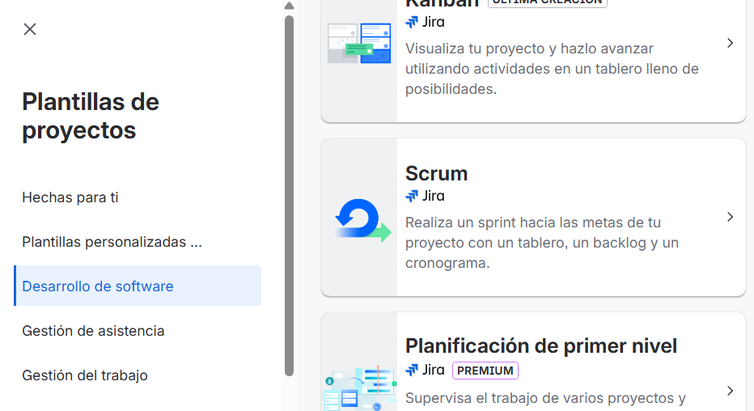
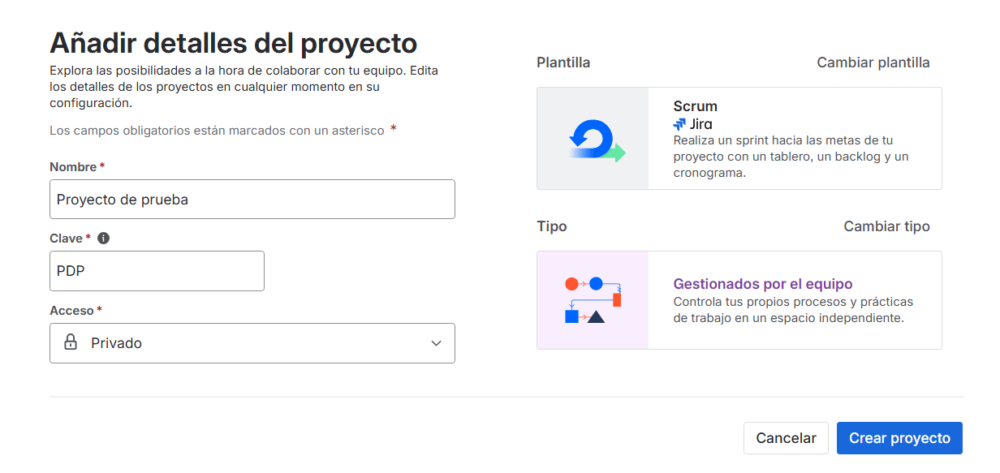
2) Orientación de la interfaz¶
-
Barra superior: (zona roja)
Buscar🔎 ·Crear➕ ·Notificaciones🔔 ·Ayuda❔ ·Configuración⚙️ ·Perfil👤 -
Barra lateral (zona azul):
Para ti,Recientes,Marcados como favoritos,Aplicaciones,Planes,Proyectos,Filtros,Paneles,Metas,Equipos,Personalizar barra lateral. -
Pestañas del proyecto (zona verde):
Resumen,Cronograma,Backlog,Tablero,Calendario,Lista,Formularios,Metas,Todas las actividades,Código,Más.
📷 Captura de la interfaz 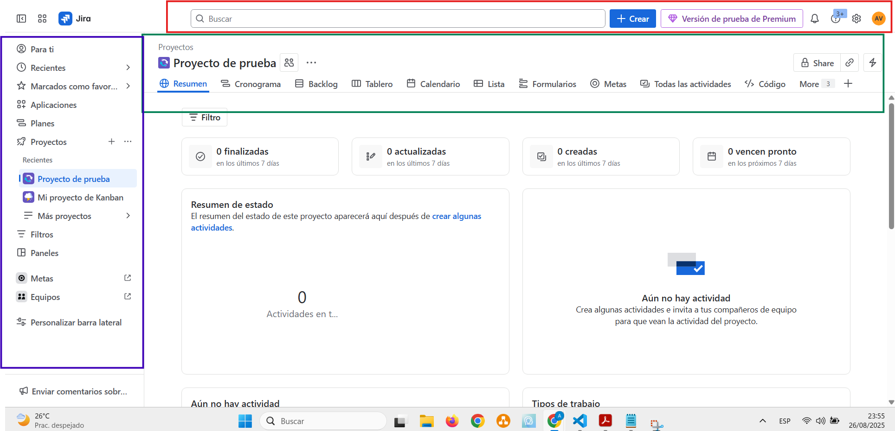
3) Preparar el producto (antes del Sprint 1)¶
3.0 Mini‑ejemplo (contexto)¶
- Producto: app para gestionar adopciones.
-
Roles:
- Adoptante: busca animales, envía solicitud, firma adopción.
- Voluntariado: publica fichas, gestiona solicitudes, coordina visitas.
- Coordinación: aprueba adopciones y seguimiento post‑adopción.
-
Objetivo del primer ciclo: que una persona vea la ficha de un animal y envíe una solicitud.
¿Por qué definir el ejemplo?
Porque aclara quién usa el sistema y qué resultado buscamos en el primer Sprint. Evita historias genéricas o técnicas sin valor directo.
3.1 Crear Épicas (por qué y cómo)¶
Qué es una épica: un bloque grande de valor que agrupa varias historias relacionadas.
¿Por qué crear épicas?
- Organizan el Product Backlog en áreas claras (evita el caos).
- En
Cronogramadan una línea de tiempo legible para semanas/meses. - Ayudan a comunicar objetivos a perfiles no técnicos.
Cómo
1. Ir a Cronograma → Crear épica.
2. Poner nombre + descripción breve de valor.
3. (Opcional) Añadir fecha objetivo y dependencias.
Épicas sugeridas (adopciones)
Registro y perfil de adoptanteGestión de animales(fichas, fotos, estados)Búsqueda y solicitudesEvaluación y visitasAdopción y contratoSeguimiento post‑adopciónDonaciones(opcional)
📷 Cronograma con épicas creadas
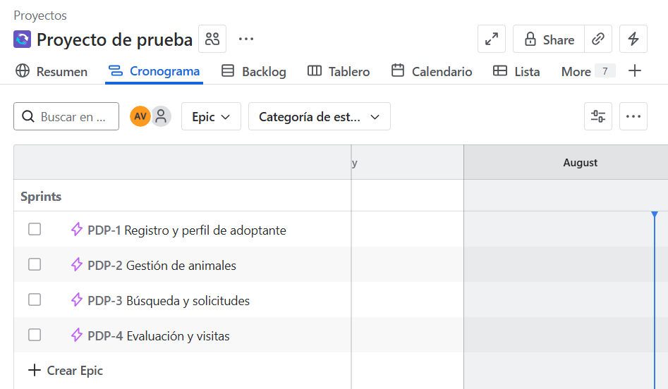
No te olvides
Hay que crear todas las épicas necesarias para abarcar toda la funcionalidad del software a desarrollar.
3.2 Crear Historias de usuario (por qué y cómo)¶
Qué es una historia: una necesidad desde la perspectiva de la persona usuaria que debe caber en un sprint.
¿Por qué historias y no tareas técnicas? Porque describen valor observable; las tareas técnicas van como Subtareas para mantener trazabilidad.
Plantilla (simple):
Como
<tipo de persona>, quiero<acción>, para<beneficio>.
Cómo añadir
- Ir a
Backlog→Crear→ Historia. - Rellenar Título y Descripción con la plantilla y criterios.
- Completar Épica, Etiquetas (
ux,api,mobile…), Puntos de historia (si ya se estimó).
Ejemplos (épica “Búsqueda y solicitudes”)
Historia A — Enviar solicitud desde la ficha
| Text Only | |
|---|---|
| Gherkin | |
|---|---|
Historia B — Ver ficha con fotos y estado
| Text Only | |
|---|---|
| Gherkin | |
|---|---|
Si una historia no cabe en un sprint
Divídela (p. ej., primero enviar solicitud, después adjuntar documentación).
📷 Creación y configuración de historias en el Backlog
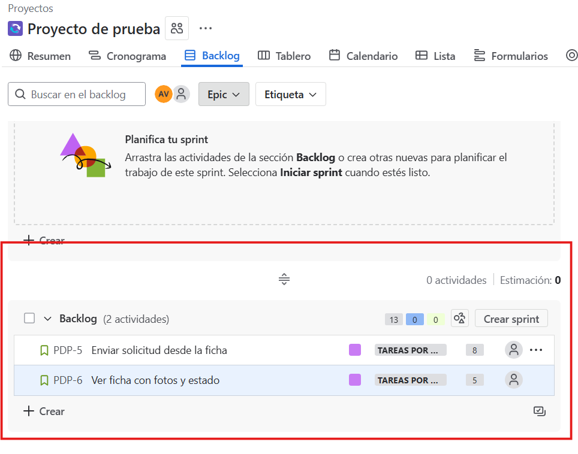
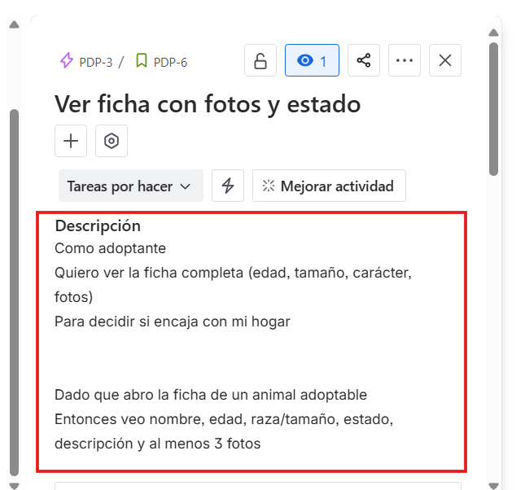
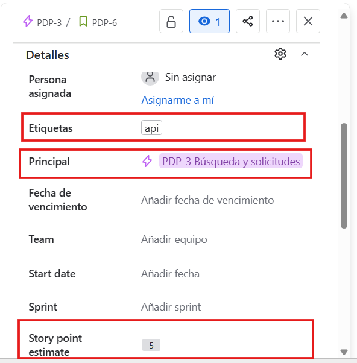
No te olvides
Hay que crear todas las historias de usuario para abarcar toda la funcionalidad del software a desarrollar.
4) Priorizar y estimar el Product Backlog¶
4.1 Priorizar (por qué y cómo)¶
Priorizar = entregar antes lo valioso y reducir riesgo. Ordena por:
- Valor para adoptantes/voluntariado
- Riesgo/Incógnita (lo incierto se aborda pronto)
- Dependencias (orden lógico)
- Esfuerzo (si hay empates, empieza por la más pequeña)
En Jira: en Backlog, arrastra historias; lo más importante arriba.
Matriz (ejemplo app adopciones)
| Historia (Épica) | Valor | Riesgo | Esfuerzo (pts) | ¿Prioridad? |
|---|---|---|---|---|
| Ver ficha con fotos (Gestión de animales) | Alto | Bajo | 3 | ✅ Alta |
| Enviar solicitud (Búsqueda y solicitudes) | Alto | Medio | 5 | ✅ Alta |
| Listado/Búsqueda (Búsqueda y solicitudes) | Medio | Medio | 5 | Media |
| Panel de solicitudes (Evaluación y visitas) | Medio | Medio | 8 | Media |
| Adjuntar documentos (Búsqueda y solicitudes) | Medio | Medio | 5 | Media |
Selección de tareas
Resultado: para el Sprint 1 nos quedamos con Ver ficha con fotos (3 pts) y Enviar solicitud (5 pts). Total aproximado: 8 pts (ajusta según vuestra capacidad real).
4.2 Estimar con Puntos de historia¶
- Medida relativa (no horas). Escala típica: 1, 2, 3, 5, 8.
- Técnica: Planning Poker (proponer → debatir → acordar).
- Los puntos se asignan a la historia, no a las sub‑tareas.
Regla práctica
Si vuestra velocidad media ronda ~18 puntos, no planifiquéis 35 para el sprint: saldrá caro en trabajo arrastrado.
En el ejemplo anterior se han seleccionado 8.
Como equipo de trabajo, con el tiempo y la experiencia sabréis cuántos puntos de historias de usuario podréis abarcar en un sprint.
5) Planificar el Sprint 1 (en Backlog)¶
- En
Backlog→ Crear sprint. - Arrastra historias hasta vuestra capacidad.
- Define el Objetivo de sprint (resultado, no tareas):
- Ejemplo: “Permitir ver la ficha de un animal con fotos y enviar una solicitud desde la web.”
- Define la duración del Sprint.
- Añade Subtareas técnicas dentro de cada historia (UI, API, pruebas, contenido).
Modelo de Objetivo (copia/pega)
| Text Only | |
|---|---|
Subtareas sugeridas (Historia “Enviar solicitud”)
- UI: formulario y validación básica
- API: endpoint POST /solicitudes
- Base de datos: esquema y tabla “solicitudes”
- QA: casos de prueba (criterios Given/When/Then)
📷 Creación y configuración del Sprint
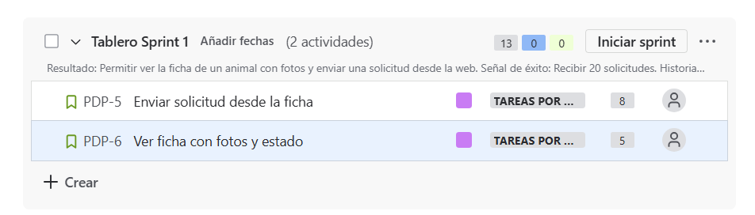
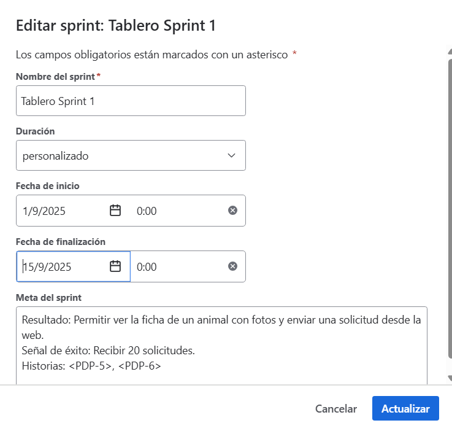
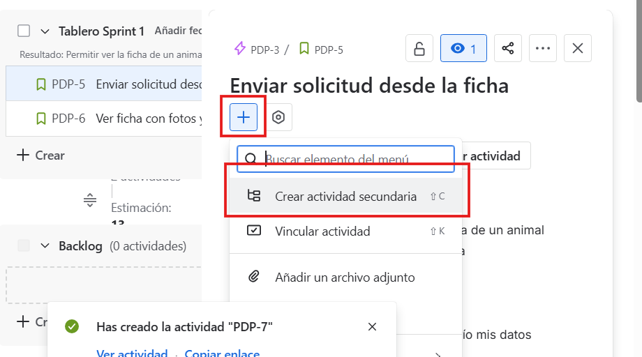
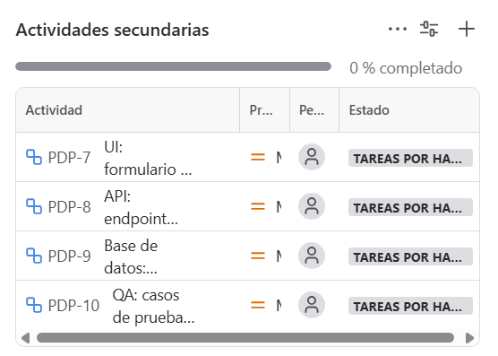
6) Iniciar y trabajar el sprint (Tablero)¶
6.1 Arrancar¶
Pulsa Iniciar sprint → ve a Tablero.
6.2 Flujo y WIP¶
Columnas simples: Por hacer → En curso → Revisar/QA → Hecho(Si no aparece alguna columna añadela)
WIP acordado: En curso ≤ 3, Revisar/QA ≤ 2 (Recuerda que es importante establecer un máximo por columna).
Para ver las subtareas
Para ver en el tablero las subtareas tendrás que cambiar el modo de vista de Grupo a Subtarea.
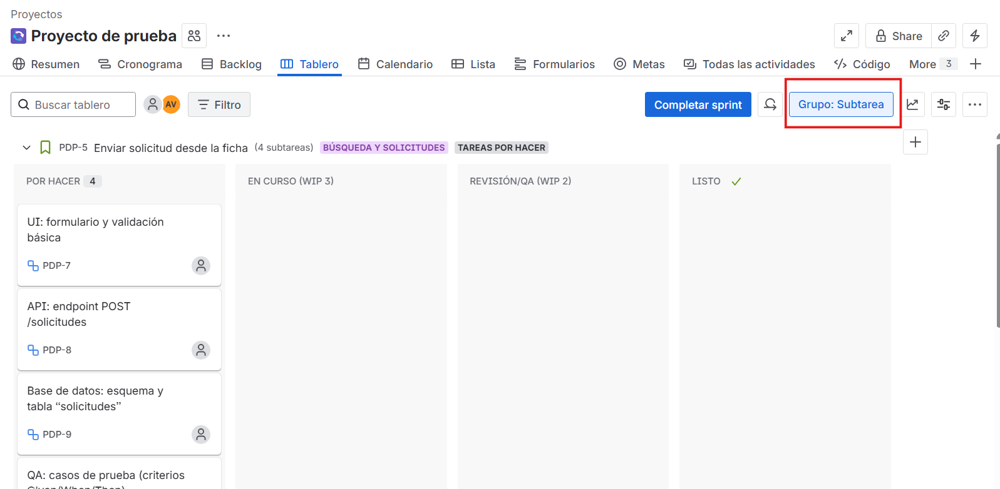
Políticas mínimas
- A En curso ⇒ cumple DoR + hay capacidad.
- A Revisar/QA ⇒ PR abierto + tests en verde + lint ok.
- A Hecho ⇒ cumple DoD (terminado de verdad).
7) Seguimiento del sprint¶
Durante el Sprint
Podrás modificar el estado de una tarea y qué persona del grupo de trabajo la tiene asignada.
- Para cambiar el estado de una tarea arrastra la tarea en el tablero.
- Para asignar a un miembro del equipo, entra en la tarea y modifica Persona asignada o selecciona el icono de la persona y elige.
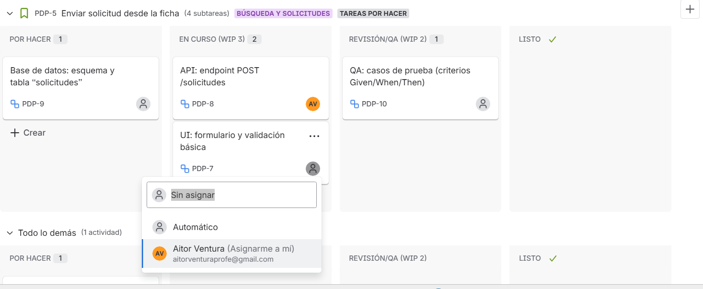
Daily: Recuerda que cada día se ha de hacer una reunión de unos 15' para hablar sobre el estado de las tareas, dificultades, etc.
8) Cerrar el sprint y aprender¶
¿Cuándo cerrar el Sprint?
Recuerda que un sprint tiene una duración, se tiene que cerrar al finalizar el plazo de tiempo, NO cuando las tareas se hayan finalizado.
Si se ha realizado una buena planificación y estimación de las tareas debería haber dado tiempo a finalizarlas todas.
- En Tablero → Completar sprint.
-
Lo pendiente: mover a siguiente sprint o al Backlog. Dependerá de si las tareas que no te ha dado tiempo a hacer quieres hacerlas en el siguiente Sprint o quieres dejarlas en el Backlog por si hay otras tareas más prioritarias. Lo habitual es finalizarlas en el siguiente Sprint.
-
Review: demo funcional de las historias “Ver ficha” y “Enviar solicitud”.
- Si el voluntariado necesita más campos, crea nuevas historias o ajusta las actuales.
-
Retrospectiva: acordad 1 mejora concreta para el siguiente sprint.
- Ej.: “Definir datos de prueba comunes” o “Limitar
En cursoa 3 de verdad”.
- Ej.: “Definir datos de prueba comunes” o “Limitar
Si durante la Demo...
Si durante la demo u otro momento aparece un Bug (error) podéis crear una nueva tara de tipo Bug para solucionarlo en el siguiente Sprint, o en el Sprint actual si sigue en curso.
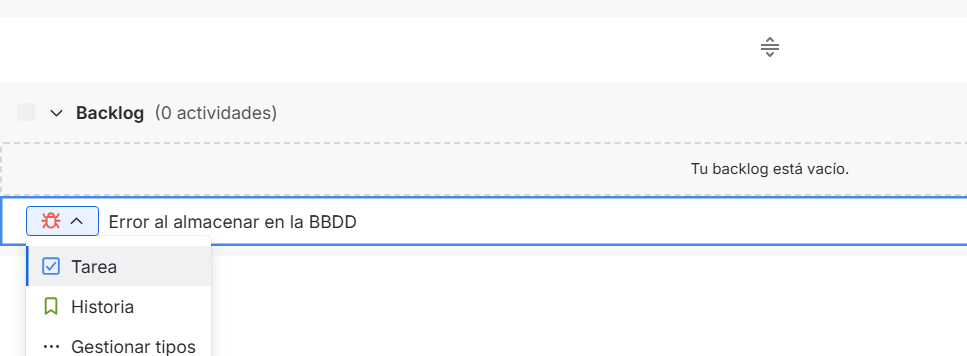
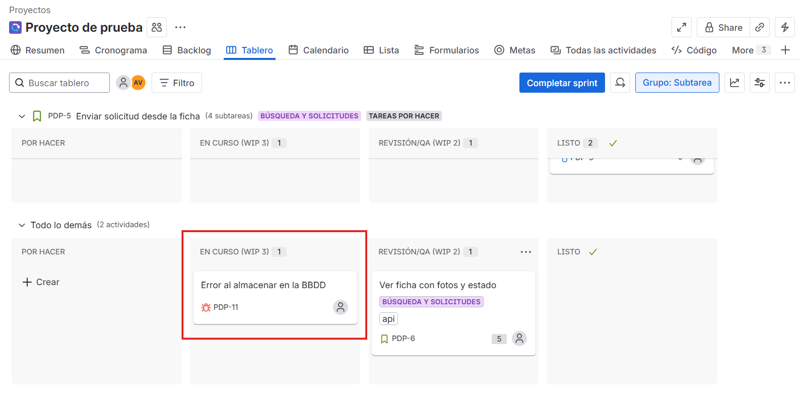
Los siguientes puntos
Como ya estudiamos en Scrum, los dos puntos anteriores hacen referencia a dos de las reuniones que se realizan durante el proceso.
9) Plantillas rápidas (para copiar/pegar)¶
Historia de usuario
Criterios (Given/When/Then)
Objetivo de sprint
| Text Only | |
|---|---|
Resumen del proceso Scrum en Jira¶
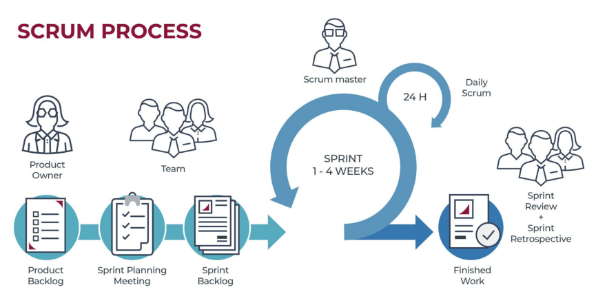
De izquierda a derecha como en la imagen: qué ocurre y dónde hacerlo en Jira Cloud.
Product Backlog → (Backlog)¶
- Crear Épicas y Historias; vincular historia ↔ épica.
- Añadir criterios en Given/When/Then en la Descripción; adjuntar diseños/evidencias.
- Ordenar arrastrando por valor/risgo/dependencias; etiquetar (
ux,api, etc.). - Estimar con Story points y mostrarlos en la tarjeta.
- Refinamiento continuo aquí; dividir historias grandes antes de planificar.
Sprint Planning Meeting → (Backlog)¶
Crear sprinty arrastrar sólo lo que cabe según velocidad (apóyate en Velocity de sprints previos).- Escribir el Objetivo de Sprint en la cabecera del sprint.
- Fijar duración (1–4 semanas).
- Dentro de cada historia, crear Subtareas (UI/API/DB/QA).
Sprint Backlog → (Backlog + Tablero)¶
- El Sprint Backlog es el conjunto de historias ya dentro del sprint.
- Comprobar que cada historia tiene épica, puntos, criterios y subtareas.
- Asignaciones iniciales si procede; crear Quick filters (p. ej., Mis issues, Bloqueadas).
SPRINT 1–4 WEEKS (Ejecución) → (Tablero)¶
- Trabajar en el Tablero moviendo tarjetas:
Por hacer → En curso → Revisar/QA → Hecho. - Respetar WIP acordado.
- Enlazar branch/PR desde el panel Development del issue.
Daily Scrum (cada 24 h) → (Tablero)¶
- Abrir el Tablero y actualizar estados/asignaciones en vivo.
- Marcar impedimentos con Flag (⚑) y, si procede, crear issue Bloqueo.
- Reequilibrar trabajo con Quick filters y límites de WIP.
Finished Work → (Tablero + Releases)¶
- Mover a Hecho sólo con DoD cumplido.
- Asignar Fix version si usáis
Releasespara agrupar entregas. - Adjuntar evidencias (capturas, resultados de pruebas) antes de cerrar.
Sprint Review + Sprint Retrospective → (Informes + Backlog)¶
- Convertir feedback en nuevas historias en
Backlogy vincularlas a su épica. - Retro: crear 1–2 tareas de mejora de proceso (etiqueta
mejora-proceso) y planificarlas en el próximo sprint.
Tras finalizar el Sprint¶
- Vuelta a empezar desde el principio para enfrentarse al segundo sprint